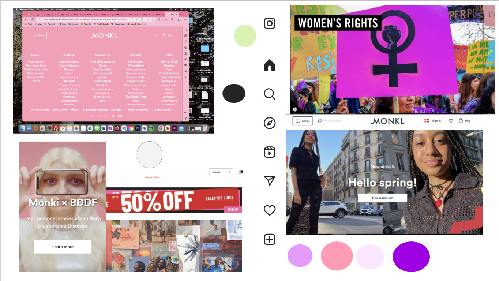
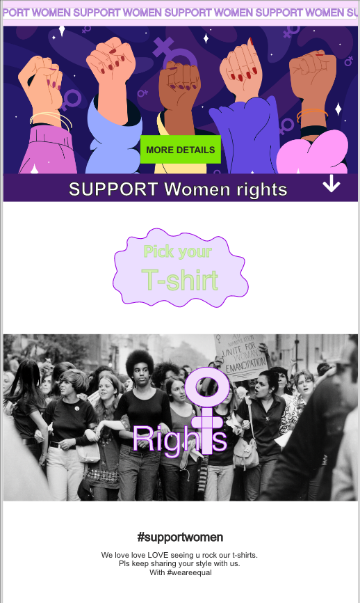

TEMA 3
I Tema 3 lærte vi om billedbehandling, brugerens oplevelse og rejse på et medie og om copy og microcopy.
Moodboard
Vi blev endvidere introduceret til brugergrænseflader - hvordan man anvender praksisnære metoder til designprocessen, såsom koncept, research fase, moodboard, styletiles, Lightning demoes, sketching mm.
Prototypen
Jeg brugte min nye tilegnede viden om iterative processor til at indsamle data og analysere den med henblik på forbedring af min XD prototype. Slutvis brugte jeg tænke-højt test til at teste brugerens rejse og oplevelse af det digitale produkt.

Min Pitch
Alt dette mundede ud i en Pitch, der skulle formidle mit forløb fra idé til prototype.
TEMA 3
Moodboard
I Tema 3 lærte vi om billedbehandling, brugerens oplevelse og rejse på et medie og om copy og microcopy.
Vi blev endvidere introduceret til brugergrænseflader - hvordan man anvender praksisnære metoder til designprocessen, såsom koncept, research fase, moodboard, styletiles, Lightning demoes, sketching mm.
Prototypen
Min Pitch
Jeg brugte min nye tilegnede viden om iterative processor til at indsamle data og analysere den med henblik på forbedring af min XD prototype. Slutvis brugte jeg tænke-højt test til at teste brugerens rejse og oplevelse af det digitale produkt. Alt dette mundede ud i en Pitch, der skulle formidle mit forløb fra idé til prototype.